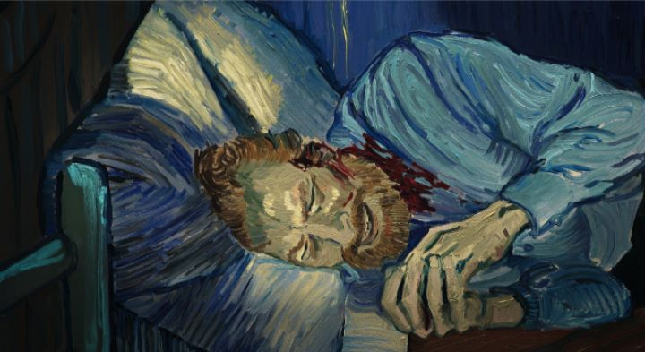

I haven't seen as much hype around an animated film as I have around 2017's "Loving Vincent." Initially funded through a public crowdfunding campaign, it was an ambitious project that strived to animate a story around Vincent Van Gogh's life, with individually painted frames each based on one of Vincent's many paintings. I personally waited years to see it finished after first learning about the project. When it finally released in film festivals in 2017, I held out to see it at my local city's film festival in Windsor, Ontario (a fine festival that tends to have one or two animation-related features in their 100+ annual selections). The audience at the festival for "Loving Vincent" was packed into a small, old-school theater, with a projection screen and a couple speakers awkwardly set up at the front stage (the room was normally used for live plays). The audience loved it, and not one, but two additional screenings would be added at the last minute to meet demand to see the film. Again, I have NEVER seen an animated film get this much attention.Of course, the excitement around the Oscar-nominated feature (not surprisingly, losing to Pixar's film that year) was not because it was animated. It was mainly because it was about Van Gogh, one of the most famous and romantically tragic artists in human history. Everyone at least recognized his name, his work, and his face, and even if a live-action film or documentary was playing, the film festival audience of middle-and-senior-aged men and women would be keen to see it. That the film was animated using over 65,000 paintings in the style of Gogh was a neat bonus that viewers would talk about after leaving the theater, rather than being excited about going in. Perhaps I'm being cynical. Opening in a 4:3 aspect ratio, to see the camera pan from a starry night sky down to the vibrant European streets is stunning. The artists really did their best to recreate the style of Van Gogh's work in every frame. This is enhanced when you realize that most of the characters, settings and camera shots are taken directly from his original paintings. I would have loved to see the storyboards for "Loving Vincent," as I suspect they were made entirely with copies of Van Gogh's paintings as seen in a gallery's catelog. To make the process easier, the animation is rotoscoped on top of real actors, who dressed and acted out the film in live-action as reference for the artists to paint each frame with. Movement only occurs as much as necessary, while still keeping the feel of the original paintings, and I suppose there isn't much "original" work in the design to give the art much credit compared to other films. But these are nitpicks, and this is realy a subperb technical achievement. Older audiences in particular, the kind who still don't appreciate the large-eyed and exagerrated form of modern American or Japanese cartoons, will appreciate the beauty of "Loving Vincent."There is a story, and that perhaps is the biggest weakness of the film. Taking place shortly after Vincent's untimely suicide, the local Postman finds that Vincent had one last sealed letter meant to be received by his brother. He tasks his son, the short-tempered Armand, to take the letter to Vincent's brother personally. After finding out the brother too had tragically passed, Armand keeps trying to find an appropriate recipient to the letter, and while speaking to the various townspeople, he learns more about the mystery behind Vincent's death. Vincent was despised by the town for his strange manner, and the newspaper cited his death a suicide by gunshot by Vincent's own hand. He had been seeing a doctor for mental illness, did he really commit suicide out of depression? Or did another want him dead? Or was the wound an accident by local kids that took their teasing a bit too far? It's a fascinating premise to base a film around, but the issue is that the mystery of Vincent's death has been well researched and documented. There are already countless books, films and documentaries that explore the possibilities. Anyone accidently watching PBS or TVO on North American television couldn't avoid the details and theories. And "Loving Vincent" ultimately doesn't try to come up with a conclusion for the film's ending. But despite that, I think more people are unaware of the mystery than I thought, so the story should come across as fascinating to the average viewer. And as a tribute piece inspired by the countless personal letters written by Vincent himself, it is a emotional journey. The actors do a lot to enhance the enjoyment of the story. I don't think any of the performances will win any awards, but the characterizations (both in acting and the script itself) remind me how exagerrated voice acting typically is in animation, usually to cater to short-attention-spanned children or teenagers. The music score also is quite lovely, evoking the feeling of nostalgia, love and loss and romantic melancholy the script tries to convey. The story isn't particularly exciting, but is memorable, and leaves a lasting impression.Because of the aspect ratio and the methods used, "Loving Vincent" feels instantly timeless, like a film that could have been made several decades ago, despite only releasing in 2017. There are many factors that will determine who special the movie will be to you, but it is undeniable that it is indeed special, and is an excellent legacy piece to celebrate the troubled artist.
- "Ani" More reviews can be found at : https://2danicritic.github.io/ Previous review: review_Love,_Chunibyo_&_Other_Delusions! Next review: review_Lu_Over_The_Wall